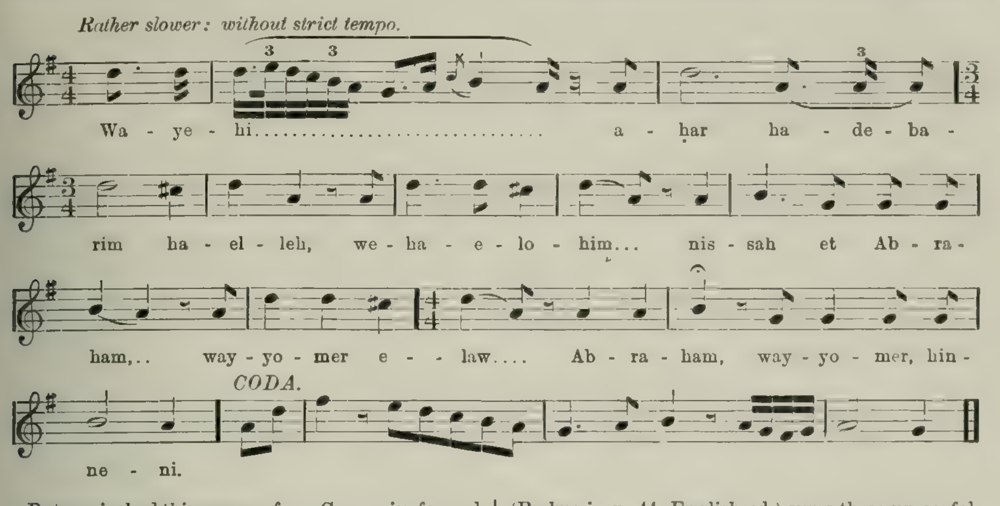
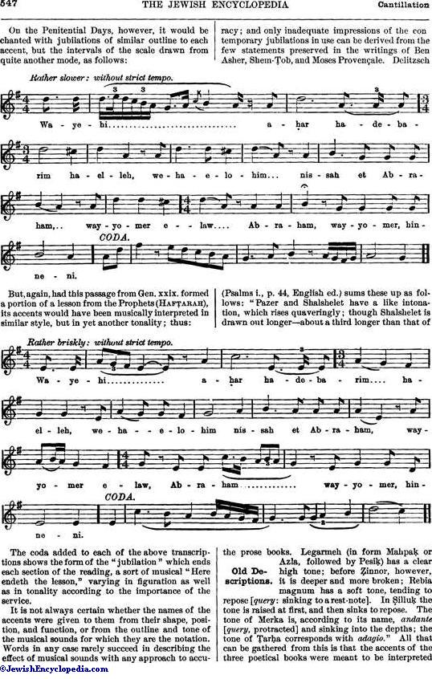
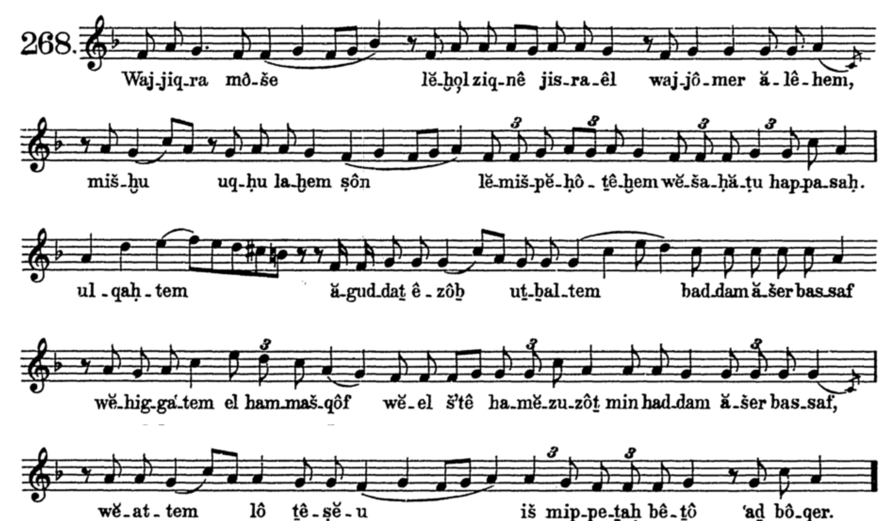
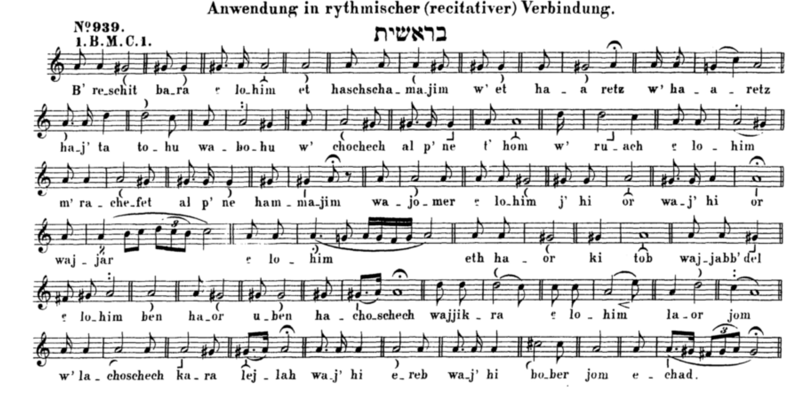
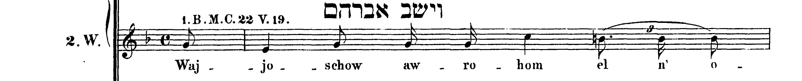
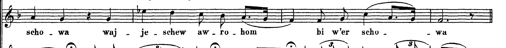
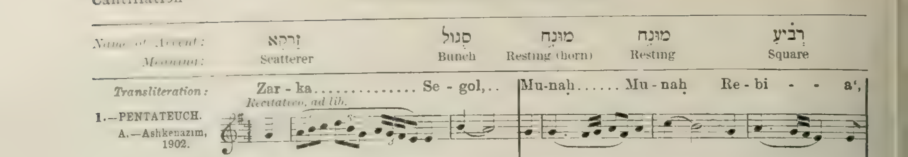

The practice workflow
Word, group, verse and span playback; repeat; independent pitch and speed; pointed and parallel views. Verified against the 2011 V5 manual, pp. 44–52.
A study in text & sound
Hear a phrase. Find your place. Make it your own.
TORAH · HAFTARAH · MEGILLOT
RECONSTRUCTION IN PROGRESS
New: Tetzaveh & Shemot listening cues · Compare recordings for the selected reader word · Toldot listening cues · Five Chukat recordings · Word timing and musical review pending.
Torah, Prophets & five scrolls
Choose a reading type and book. Text selection does not select a tradition or pronunciation.
Choose any range in Torah, Prophets or the five scrolls. Playback uses the explicitly selected musical source; the PocketTorah recorded-reference library covers Torah only.
Torah · 1 section
Saved sections carry their melody and display preferences. Your tempo, transposition and comfort range stay personal.
Choose a Gregorian month and Israel or Diaspora schedule. Hebrew service dates, weekday and festival readings come from Hebcal.com, CC BY 4.0. Triennial divisions follow Hebcal’s CJLS-based schedule; congregational practices can differ.
Dates refer to the named civil day’s service. For an evening, choose the following civil service date. Conversion works offline; new reading months may need internet.
Your browser’s Hebrew calendar supplies local date conversion, checked against Hebcal’s attributed conversion data. Supported civil dates are proleptic Gregorian years 1–9999; the first and last Hebrew years are partial. Local historical adoption of the Gregorian calendar is not inferred. Evening boundaries are chosen manually; no sunset time or location is calculated.
Date conversion evidence · Pinned original comparison data · CC BY 4.0
Choose Load month, or try one of the bundled examples. Your open reading stays available.
Load month first uses saved or bundled data. Other months and Refresh contact Hebcal with the chosen month and Israel/Diaspora flag. Up to 12 loaded month responses are saved on this device for offline use. Eight source examples are bundled. No location is requested. A civil date identifies the named day’s service; evening/sunset conversion is not calculated here.
Opening a reading checks each structured source range and verse count against UXLC. Related haftarah variants select text boundaries only. Consecutive Megillah units can form one tutor section; all source units and notes are retained with it. Partial or ambiguous verse boundaries remain reference-only. Maftir remains a separate occurrence, even when it repeats earlier verses. Melody, pronunciation, key and speed stay separate. Calendar selection adds no special cadence or traditional preset.
Calendar provenance and source examples · Haftarah/Megillah reference checks and limits · Torah source/UXLC numbering evidence · Numbering map · CC BY-SA 4.0This original motif tests the practice workflow. It is not a historical cantillation melody. Syllable divisions are drafts awaiting review.
Torah · practice reader
When the score and pronunciation divide a word differently, highlight the complete common span together. Each source alternative keeps its own syllables; no individual note or sung timing is assigned. Shared-span follow evidence
Pronunciation text under the words is hidden.
Text follows the preferred reading. The two Formal Ashkenazic profiles and modern inventory options use the selected MAM source categories. ? means unresolved, ∅ means source silence, (∅) means proposed consonant loss, and ↔ links one shared consonant event. Source syllables, stress and alternatives remain separate. These are phonemic proposals; recordings keep their original pronunciation.
Click a word to begin. Shift-click another word to select a span. Double-click to hear one word.
Sourced scroll lines are loading.
The pointed reader and consonantal practice follow the source’s preferred reading. Written forms remain separate here, including words written but not read and read but not written. Click a reading word to select it. No word-to-syllable correspondence is inferred.
Line and gap positions follow Akiva Gordon’s tikkun.io 245-column data, under MIT. Written letters come from this app’s exact UXLC edition; its qere reading words remain separately selectable in the pointed pane. Spelling and word-division differences are flagged. Excerpts omit words outside the displayed reading window. This is a typeset practice view; widths are approximate, scrolls vary, and it is not a manuscript facsimile.
The unchanged Shlomo Stam font by Shlomo Orbach derives from Ezra SIL SR, under OFL 1.1, supplied by Open Siddur. Its shapes do not establish a kosher scroll or any musical tradition.
Exact source, font and license record · Pinned layout source pack · Layout MIT license · Font OFL license
Use Haftarah source practice for this reading. Its original recordings have separate source controls below.
Choose a complete cantillation phrase around the cursor, then play or repeat it with your current sound settings. The source hierarchy is available only where the whole marked verse agrees with this edition.
Checking source phrase correspondence…
Open Scriptures Hebrew Bible supplies these nested divisions, under CC BY 4.0. Melody and pronunciation keep their own settings. The boundaries do not add a musical realization, sung timing or voice; independent cantorial review is pending. Changed marks, different word divisions and incomplete source structure remain unavailable.
Complete Torah comparison and gaps · Phrase selection verification · Attribution and adaptation · Original source XML · online
Name a hidden accent, reveal the original marked words, then play the answer with your selected sound settings. Complete maqaf groups stay together.
Answers identify source characters in this edition. They do not grade singing or certify a melody or pronunciation.
At the cursor
Accent in source text
Preparing links to the existing source word studies…
Available for the existing studies of Genesis 1:1–2:3, 2:4–19, 5:25–6:8, 27:28–28:4 and Numbers 19:1–17. Recordings retain their own performed melody and pronunciation. Your reader pronunciation text, musical source, range, key and tempo stay independent. Opening a study does not play or download audio.
This choice changes the source transcription only. Recordings keep their original pronunciation. These source labels are separate from Kinnor’s historical Accent presets.
Compare the marked reader, primary written form and documented source reading for וּמְחִיּיָאֵ֗ל. The extra written yod has no assigned syllable or sound. Exact source rule and correspondence · Original rule reference · GPL3
Source stress and superscript marks are retained. Torah Hebrew syllable underlay follows the source computation, with shared consonants marked explicitly. Prophets and scrolls now use the same source syllable computation. Exact marked-Hebrew ranges are shown where written forms agree; differing forms retain unresolved ranges. Categories, IPA and singing voices remain pending for these books. Source computation · Exact Hebrew range audit. Written Hebrew keeps its original letters and accents; no new phonemes, syllable timing or sung voice is generated.
Phonetic MAM distinguishes consonants, vowels, silent signs and shared consonants before projecting each transcription style. These are source categories, not reviewed acoustic phonemes. Hebrew letters and accents remain unchanged; syllable ownership follows the existing checked ranges. Both original style values are shown, including alternatives. No IPA, new singing voice or equivalence to Kinnor’s six Accent presets is inferred.
Source categories, rules and provenance · Complete reconstruction and alignment audit · Letter-cluster binding audit
Annotate source syllable times in the original chant
Units follow the source’s middle dots, hyphens and spaces. Primary stress follows its explicit stress markup; acute marks, breve marks and superscript e stay literal. Computed underlay shows exact written clusters where correspondence is clear; otherwise it keeps source Hebrew. Independent linguistic review is pending.
Download source IPA proposalOne source table, separate from both transcription text styles and all six historical Kinnor Accent labels. Nineteen category mappings have explicit source questions; a tsadi shared half remains unassigned. This evidence does not implement a reviewed phonological grammar, singing voice or sound alignment.
Source proposal and all uncertainties · Category-reference audit · Singing-source research · Unchanged source pack · GPL3
The study file retains both styles, exact source cells and marked Hebrew. For Torah, computed source slices, exact written Hebrew ranges and source category plans for both transcription styles are included, with explicit shared-consonant references. Other books include computed source syllable slices and exact written ranges where the original forms agree; differing forms keep null written ranges. Category/IPA plans remain unavailable for these books. Phonemes, note links and audio times remain unassigned.
Source: Hebrew Wikisource · Miqra according to the Masorah, Phonetic MAM by Benjamin Denckla. CC BY-SA 4.0. Attribution and limits · Complete correspondence audit · Explicit written/read variant evidence · Primary edition word correspondence · Primary MAM edition and reuse terms · Original source pack · 26 original Prophets and scrolls source displays · Prophets and scrolls correspondence audit · Hebrew underlay source audit · Computation source · GPL3
Khan’s printed examples give two dagesh reading streams. Choose either in Reader pronunciation source to show its literal phonetic text under the unchanged Hebrew words. This choice is independent of the MAM comparison style, melody, recordings, key, range and tempo.
| Reading stream | Printed transcription |
|---|
The 159 words have separate links in both streams. Five verses use the source’s explicit common reading. Length marks, glides, stress and doubled consonants stay as printed. No syllable boundaries, audio times, six Kinnor voices or full pronunciation grammar are inferred. The source’s complete Hebrew mark correspondence and independent transcription review remain pending.
Download published word readingsGeoffrey Khan (2020), §I.5.4.1, pp.614–620 · Primary publication · CC BY4.0. Word links and reflow by this reconstruction; no endorsement implied. Source pages, footnotes and attribution · Exact text, source references and word bindings · Compare the existing fixed Foreman recordings
Inspect the six Accent labels documented by Kinnor. This choice compares evidence only. A label and a few examples do not supply a complete pronunciation grammar or singing voice. Melody, text style, key, range, tempo and recordings keep their own settings.
Source categories remain those of the selected MAM text style. Related help observations are shown for comparison; their application to each category is unreviewed. Original marked Hebrew, source syllables, shared consonants and written ranges are retained. No phonemes, musical notes or sound times are assigned.
Profile specifications, sources and pending rules · Kinnor V5 manual, pp.48–49
Compare recorded pronunciation readings by Asael · unchanged source chanting; separate from the phonemic research proposals below.
Compare the two source-defined Formal Ashkenazic systems and modern inventory options independently of melody and the MAM transcription. These are incomplete phonemic proposals awaiting linguistic and cantorial review. Kinnor’s historical Accent labels remain separate. Recordings keep their original pronunciation; this preview generates no sound.
Symbols show proposed phonemes; ∅ marks an explicitly silent source category, while ? marks an unresolved correspondence. Shared consonant halves reference one proposed consonant event. Source branches and exact marked Hebrew remain separate. Syllable closure uses the source before consonant loss and degemination; primary stress is kept where established. Vowel quantity, acoustic phones and audio alignment remain unassigned.
Download word pronunciation proposalFormal Ashkenazic rules and coverage · Modern inventory adaptation and gaps · Modern structural note references · Optional final-loss evidence and gaps · Optional final-loss note references · Pinned reference code and license · Phonikud code inventory · CC BY4.0 · Code license · Attribution and adaptation limits · Katz 1993 · primary phonology
C: conjunctive. D1–D4: source-guide disjunctive levels. Frames follow the pointed source in every view. Context-dependent combinations are marked separately.
Names and prose classes follow the source guide. A complete contextual hierarchy and musical realization still require review. Positions below count encoded source characters, including combining marks.
| Sign | Code | Name | Class / role | Position |
|---|
Maqaf joins are retained as units. Repeated positional signs are grouped for search; every original sign remains in Inspect source signs. C* → D means zero or more conjunctives followed by a disjunctive. This is adjacent-sign context, not a full hierarchy or a melodic rule.
Wickes 1887 · primary reference, pp. 9–12Find words with a sign in this reading or across the Torah. Go to word opens the example and keeps your key, speed and volume.
Compare published figures related to the encoded signs around the selected word. These are sign lookups, not verified musical conditions or word chanting. Open a figure to study its separate instrumental notes; your reading, pronunciation text, recordings and musical source stay selected.
·
Unreviewed conditions, timing choices and alternative routes remain explicit. No pitches are assigned to this word or its syllables. Idelsohn No267 stays a manual chart because its modern sign correspondence is unassigned. A missing lookup does not mean a tradition has no melody.
Download context lookup recordComplete Torah lookup audit and musical gaps · Cohen 1902 · general cantillation account
Find adjacent accent patterns in qualified source units. Each example selects whole words, including maqaf joins. Your musical source, key, speed and volume stay selected. Cases needing interpretation are excluded. Selection does not start playback.
Patterns are derived from this edition’s C* → D source runs, including shorter suffixes. This is a source lookup chart; it is not a reconstruction of Kinnor’s approximately 70-combination teaching chart or a set of playable traditional motifs.
Open to build the chart from the local Torah text.
Original recorded chant
Loading the offline Haftarah source catalog…
Choose a source take, open its ordered reading, then select words in the reader. These recordings keep their own melody and pronunciation. Their source passage definitions are separate from the calendar’s reading customs. Overlapping passages keep their separate takes.
The reader’s cursor, selected span and playback boundary apply to Play selected reader span. Haftarah speed and pitch are independent of instrument BPM, key and range. Changed pitch uses the existing processor with formant compensation requested; acoustic review remains pending. No pronunciation style, note transcription or complete traditional grammar is synthesized. Whole recordings also retain their original introductions and endings.
Original audio: PocketTorah, Not-a-Box Media Lab · Russel Neiss and Rabbi Charlie Schwartz. Individual readers are not separately identified here. Audio/adaptations: CC BY-SA 3.0 · Source timing: CC BY-SA 2.5. No timestamp, source Hebrew or reader text is rewritten. Three takes require timing review; one reader word form remains unmapped.
Original audio · Complete source and alignment audit · Unchanged source text/timing data · Practice behavior and limits
Named readers · reusable sources
The original 72-performance collection includes: paired Ashkenazic and Israeli-pronunciation readings by Asael, 64 Rosh Hashanah verse recordings, Torah and Esther cantillation tables, and four Tiberian pronunciation studies of Genesis 1:1–13. Select the published pronunciation reading and recorded delivery separately. Each take keeps its own pitch, pace and voice.
For Genesis 1:1–2:3, open Draft word boundaries → Automatic word support to locate individual words for listening review. The same selected word is retained when you change pronunciation; each take keeps its own clock and draft.
Genesis 1:1–2:3 · the source labels both melodies Ashkenazic and identifies pronunciation separately. These are two distinct performances and clocks. Their word-timing drafts retain the same marked reader words with separate, initially blank boundaries. Originals, rights and coverage evidence · Larger source archive · research index
Two additional paired Genesis passage candidates now open beside the unchanged Hebrew, with separate personal word-timing drafts and optional acoustic support. Other source ranges with apparent discrepancies stay withheld; no corrected range or reviewed word timing is assigned.
Choose a study, then load one original recording below. Recordings from this archive download only when you press Load recording. Catalog pronunciation and melody labels describe fixed performances; word alignment and independent singing styles remain under review. Missing verse ranges and the source’s exceptional spellings are retained.
Genesis passage candidates and unresolved source discrepancies · Additional acoustic studies and limits · Exact source and research pack · Attribution and reuse
Selected primary catalog revision · Archive evidence and limits · Pinned catalog source pack
Nombody’s five cataloged recordings carry Jerusalem, Moroccan, Turkish, Ashkenazic and Portuguese melody labels. The original files credit Joshua Hosseinof and carry a public-domain dedication. These are fixed recorded performances; exact verse coverage, pronunciation claims and melody realizations await review. The Ashkenazic entry has conflicting pronunciation labels, shown with that recording.
Compare 255 unchanged Hebrew words in the source-linked Numbers 19:1–17 reading candidate. Each of the five original recordings has its own optional model hints and blank personal word boundaries. The companion text specifies this reading; exact performance endpoints, text-edition agreement, word onsets and sung tails still need review. Choose a word, load Automatic word support, then audition it with context. Changing a recording keeps the selected word and uses that original’s clock.
Linked reading division and remaining evidence gaps · Chukat word-support sources and limits · Pinned Chukat source and research pack · Chukat attribution and reuse
Asael’s unchanged chanting recording has Israeli pronunciation and an Ashkenazic melody label. The linked text lists Genesis 27:28–28:4, with 358 unchanged reader words. Three words near its close have sparse listening cues from two recognizers; 355 have no agreed cue. Exact performed endpoints, word boundaries, pronunciation and musical realization remain unreviewed. Open the study to select בִּרְכַּ֣ת / Genesis 28:4 word 4; load the original, then expand Sparse listening cues. Reader settings stay independent.
Toldot source evidence, cue gates and remaining gaps · Pinned Toldot research pack · Toldot attribution and reuse
Selected primary reader catalog revision · Reader sources, original licenses and limits · Pinned reader source pack · Reader attribution and reuse
Compare Asael’s cataloged Ashkenazic melody with Itamar Malka’s cataloged Moroccan melody for the same passage candidate. Choose Israeli pronunciation to hear either melody; Asael also supplies an Ashkenazic-pronunciation performance. These are unchanged recordings, with separate clocks and personal drafts. No missing combination or complete melody system is synthesized. Originals, catalog evidence and review limits · Pinned source and research pack · Attribution and reuse
Available recorded combinations
Each button selects the melody and pronunciation labels of one actual recording. The separate menus retain only the combinations provided by this source.
· · Original performance source
The seconds span is your listening selection. These recordings have no reviewed word or syllable timings here. Spoken studies are labeled without melody; the recorded chant is a separate delivery.
The Tiberian recordings are Alex Foreman’s performances published with Geoffrey Khan’s 2020 study, §I.5.4.1. They illustrate two reconstructed dagesh readings, each with and without the source’s “Sefardi melody.” They are not identified as Kinnor Accent realizations. Gabriel Kretzmer Seed’s 2011 Esther table is shared by the Open Siddur Project as Nusaḥ Ashkenaz.
Isabel Bard’s 2021 Torah table is identified as Western Ashkenazi by its archive, under CC BY-SA4.0. All original audio files are unchanged. No pitches, phoneme rules, syllable alignment or Bible-word timing are inferred. An independent transcription and qualified review are needed before these performances can become word-aligned or synthesized presets.
The 2018 Rosh Hashanah document adds 64 unchanged Hebrew verse recordings, with a separately uncredited performer. It covers Genesis 21, Genesis 22 and Numbers 29:1–6. These are distinct from the 2019 Len Fellman performances; no new pronunciation grammar or full melody system is inferred.
The Esther table and Genesis 22:1 verse clip are included. Other originals load only on request and are verified before playback. Saved copies work offline when device storage is available. The standalone file loads optional recordings from the published trainer.
Source catalog, rights and review record · Full recording attribution
Selected original SHA-256:
Mark the original recording against unchanged reader words. Every interval remains a personal draft: source-edition comparison, syllable times, phonology and musical notes require review. Pronunciation text styles do not change these recordings or times.
This source has no Bible-word mapping.
·
Locate a word in the original recording for listening review. These speech-model estimates can miss consonant onsets and sung vowel tails. Every word keeps its original Hebrew and accents; saved boundaries stay unchanged.
One second of context is added on each side. Set heard word boundaries yourself using the controls above. A matching model letter is not linguistic or musical approval, and no syllable or phoneme times are assigned.
Itamar Malka word-location study and uncertainty · Additional Genesis studies and withheld discrepancies · Method, model uncertainty and source rights · Pinned alignment research pack
Two recognizers processed the audio separately, without a supplied Torah transcript. Unique literal contexts across the entire Torah, agreement within 0.75 seconds and a local signal check leave only three cues. These locate listening context; they do not mark a word’s start or end.
Two seconds of context are added on each side. The chant recognizer emitted Hebrew on digital silence; that failed control is retained. Possible training overlap and recognition errors remain. Signal activity and agreement do not certify a heard onset, phoneme, melody or tradition. Personal word boundaries remain blank until you enter them.
Source identity, both model revisions, limits and missing cues
Compare the original recording’s model consonants with this unchanged Hebrew word. Model spaces can split or join Hebrew words. Highlighted consonants are provisional comparisons; vowels, sung durations and pronunciation review remain unassigned.
Change the independent pronunciation text comparisonSurrounding model output; its spacing and errors are retained:
Open Automatic word support above, load its word study, then use Audition support with context to review the original. These comparisons leave your draft boundaries and the recorded voice unchanged.
Compare raw model vowel text with the unchanged source syllables. Two uniquely matched consonants bracket each observation. A structural link does not verify the vowel sound: source transcription and model output can disagree.
| Marked Hebrew | Source syllable | Model vowel text |
|---|
Blank matches remain unassigned. Shared consonants and differences in source marks are labeled. Compound source units stay intact as unresolved rows. No individual vowel-point split, heard phoneme, sung duration or new voice is assigned.
Vowel method, source evidence and limits · Reproducible vowel research pack
Source phonetic evidence and limits · Pinned phonetic research pack
Sourced recordings
Loading the recorded-reference catalog…
Unmodified chant from PocketTorah Audio Files, Not-a-Box Media Lab · Russel Neiss & Rabbi Charlie Schwartz. The source describes Avery–Binder style; individual readers are not identified per file. Audio and derived alignment: CC BY-SA 3.0.
Each take retains its recorded key, tempo and pronunciation. Instrument controls affect the selected instrumental source above. Word timings come from the source and await acoustic review. The optional pitch measurements below are separate from the instrumental score; no syllable timing or pronunciation grammar is assigned.
These groups have an original outer interval but no reliable individual word times. Personal marks stay separate from the source. They do not assign syllables, pronunciation, musical notes or independent review. Use reference/chant volume to listen; zero volume runs a muted clock.
Mark source syllables against PocketTorah’s original chant. These personal annotations do not alter Hebrew, accents, source word times, musical notes or recordings. Each transcription style and source variant keeps its own draft. The recording retains its original pronunciation.
For a pronunciation word shared across written words, enable Keep shared source pronunciation words together in the instrument controls. The complete group can use its consecutive original word windows together; every syllable keeps all member words and no individual owner. All annotation fields begin blank. The source transcription still needs comparison with the recorded pronunciation.
Playback uses reference/chant volume at the original pitch and speed. A muted playhead is only a clock annotation, not evidence of a sung boundary. No unit duration is estimated, and gaps are not identified as silence.
Phonemes, note allocation, source-edition comparison and independent review remain unassigned. Draft format and evidence still needed · Shared source word timing checks
Choose a Hebrew word in the reader. Measurements for its recording load on demand; the standalone download includes all measurement packets. Points show automatically estimated fundamental frequency in the original recording, using a fixed-window YIN-derived measurement. Empty intervals are unassigned frames, not musical rests. Periodicity scores are not probabilities of a correct musical note.
This evidence does not change the Hebrew, accents, pronunciation text, selected melody, range, key or tempo. It is not a reviewed score, melody grammar or independently pronounced singing voice. No syllables or phonemes are timed. The source describes Avery–Binder style; these estimates do not establish a tradition identity. Use Play reference span to hear the unchanged source recording. Measurement method, source checks and review limits · Direct source-frame audit · Measurement adaptation: CC BY-SA 3.0.
Joint chanting and pronunciation coverage evidence
Exact coverage audit · Original-window policy and withheld words. Opening a gap does not start playback. Complete takes remain available without timed highlighting.
Separate research points for Tetzaveh, Shemot and Shmini. Each cue needs concordant literal context from two source-only recognizers. They are places to listen, with surrounding audio; word boundaries remain unassigned. The original Hebrew, marks and timing limits are retained.
Source evidence and withheld cues · First observation pack · Attribution and reuse · Additional Shemot and Shmini observations · Additional study attribution
Optional, unreviewed listening points. The chant recognizer produced Hebrew from digital silence, and these recordings may have been used in model training. Matching text and sound activity do not establish a word boundary, a melody system or a pronunciation voice. Listening review is still needed.
The reference covers all 54 portions in 378 original recordings. Eight timing files have count or ordering errors; their complete takes remain available without timed word highlighting. The catalog identifies those records instead of guessing boundaries. Other spans can cross recordings and repeated assigned sections.
The recording text is WLC 4.14 as distributed in 2012; the practice reader retains UXLC 2.6. Chapter letter sequences match, but marks, verse numbering and one word boundary differ. Both exact sources and original word parts are retained. Numbering differences in the Decalogue are explicit. No source text is silently replaced.
Load downloads only the recordings needed for your choice, verifies their original checksums and saves them on this device when possible. Complete-recording playback includes the original opening and closing sound. Timing metadata follows the creator’s 2012 release under CC BY-SA 2.5. The derived comparison and reference adaptation are CC BY-SA 3.0. Attribution and source checksums.
A published musical source
Francis L. Cohen’s 1902 Jewish Encyclopedia example, vol. III, p. 539, prints an ordinary Pentateuchal chant. This study transcribes all 13 words of Genesis 22:1: 52 printed note components, including two tied pairs, and four rests. Tied components sound as one held note. The separate untexted coda is excluded.
Compare the printed Munaḥ–Revia pattern table
The source marks flexible timing; playback regularizes its printed durations to your tempo. The source key is retained at transpose 0, with modern 12-tone tuning. Hebrew underlay is a source-preserving draft, not a pronunciation profile. Independent transcription, underlay and musical review remain pending. No melody rules for other verses or coda syllables are inferred.
The printed Hebrew and musical underlay identify Genesis 22:1; the article prose inconsistently says “Gen. xxix.” All four systems are transcribed before CODA. Printed bars balance, including the pickup and complementary final bar. A small ring between pickup notes in one scan is absent from the independent copy; it is not treated as a pitched note.

Independent copy of the same printed page:

Alternate volume scan; PDF page 577 is printed page 539. The second image is a crop of that rendered page.
Original publication: public domain. Scan provenance and rights · Verse transcription and evidence record. New transcription: CC0.
The same words in the penitential setting
The 1902 article, p. 547 prints Genesis 22:1for the Penitential Days. This source study retains49 measured notes, one small quarter note, six rests, six slurs, three tuplets and one fermata with no specified hold. All 13 Hebrew words and accents stay unchanged.
The small C5 quarter note has no assigned source duration, and its adjacent mark is unresolved. Full-span playback requires an explicit original study: 80 ms for that small note between unchanged measured notes. The mark is not realized. This is an instrumental written-pitch study; historical ornament interpretation, musical/underlay review, a complete High Holiday grammar and a singing voice remain pending. Pronunciation text style, melody, key, range and tempo are independent. The untexted coda is excluded.
The source image retains the small note and adjacent mark exactly. The study’s question mark identifies that unresolved notation; it does not replace it in the original. No rest, trill or other musical meaning is assigned. The source says “Rather slower: without strict tempo.” Measured durations are regularized here. The three-beat final bar remains under 4/4 and complements the opening pickup; no extra time signature is inferred.

Compare the second faithful page scan

Literal source transcription and unresolved notation
Playback and independent pronunciation alignment audit
Original 1902 print public domain; new transcription CC0. The marked text identifies Genesis 22:1 while the article prose says Gen.xxix.; that discrepancy is retained. A qualified reading of the small-note sign and an authorized reviewed performance of this exact example would let us replace the original timing policy.
The same words in another setting
Cohen’s 1902 article, p. 547, imagines the same Genesis 22:1 verse as if it were part of a reading from the Prophets. This printed comparison is a Torah verse in a hypothetical musical setting. It supplies 51 note components, 50 attacks, five eighth rests, one tied pair, seven slurs and three tuplets. It does not supply a complete melody grammar or an actual Haftarah passage.
Compare the ordinary Torah settingAll13Hebrew words and accents are kept. Melody, pronunciation text style, key, range and tempo are independent. Printed durations use your quarter-note tempo; expressive timing, modern tuning and instrument articulation are approximate. The separately labeled untexted coda is excluded. Musical and Hebrew-underlay review remains pending; no singing voice is added. The article’s prose says Gen. xxix., while the actual text identifies Genesis 22:1; this source discrepancy is retained.

Compare the second faithful page scan · Exact transcription, source and review limits
New · bounded printed-score study
Follow 125 written pitches and nine printed rests across 39 unchanged Hebrew words. This is an unreviewed instrumental transcription from Idelsohn’s 1929 Moroccan volume, printed page 102. The passage is identified by its full word sequence; no verse caption is printed above the example.
The first six words use the written values. Two small C4 eighths elsewhere have no assigned duration or ornament role. Full-span playback requires the separate optional original 80 ms timing choice. Modern instrument sound, 12-TET tuning and regular tempo are approximations.
Word highlighting shows lexical correspondence candidates. Hebrew syllable and phoneme fitting remain unassigned. Pronunciation text, melody, key, tempo and range remain independent. This example supplies no whole-Torah melody grammar, reviewed tradition, Kinnor equivalent or singing voice.

Save exact No268 transcription and evidence · Original volume and rights catalogue
Original print public domain; new transcription CC0-1.0. The image combines five unchanged source strips with white spacing. Nine tuplets, eleven slurs, source accidentals and all open questions are retained. A qualified review of this exact notation, word and syllable fitting, and an authorized recorded performance would let us replace the timing demonstration. Narrower locality, performer and Kinnor equivalence are unknown.
The original Latin underlay supplies 93 indexed groups for 123 pitches. Two small notes have no printed syllable assignment. These groups isolate written instrumental notes; they do not assign Hebrew/MAM syllables, IPA, sung phonemes or recorded times. Pronunciation text in the reader remains independent.
Save printed-syllable groups and source-photo evidence
This fresh rectangular source crop includes the last line’s descenders and phonetic marks. Original print public domain; new correspondence data CC0-1.0. Word photo windows retain nearby notation and separators; individual character bounds and phonetic transcription are unassigned. Independent musical and underlay review remain pending. Source and reuse notice
A worked Torah melody
Abraham Baer’s third expanded edition [1894], p. 210, No. 939 prints this complete example after its Sephardic accent table. The contents credits Nos. 937–943 to S. Naumbourg’s Agudas Schirim. The 52 Hebrew words retain every original UXLC letter and accent.
145 distinct notes, one eighth rest, two triplets and six fermatas. Playback regularizes the printed durations to your tempo; fermata hold lengths remain unspecified. Slurs keep separate attacks. Modern equal temperament is approximate. The two pronunciation text styles stay independent of the melody, key, range and speed; mismatched syllable spans remain unlinked.
This is a complete printed example, with independent musical and Hebrew-underlay review pending. Its section label does not identify a Kinnor preset or establish rules for other verses. No singing voice is added.

Source-note and Hebrew underlay evidence · Exact pronunciation note-span audit · Nineteenth-century print public domain; new transcription CC0. Scan: Universitätsbibliothek Johann Christian Senckenberg, Frankfurt am Main; digitization policy. This edition differs from the 1877 edition cited by Cohen.
Another printed setting
This separate 1929 setting retains all 39 marked Hebrew words, with 131 pitches, two rests, ten thirty-second notes, four tuplets and eight slurs. Two words cross staff systems; they keep their word IDs without an added pause or tie. The source is a candidate transcription, with no accepted Hebrew/MAM syllable or phoneme fitting.
The first six words and complete first verse use only written values. Full-span playback requires two separate original choices in the instrument controls: include the parenthesized A4 quarter with its written value, and give the final small C4 eighth 80 ms. The parenthesis’s performance role and small note’s historical duration remain unassigned. The small C4 accompanies the second printed group of the last word; it is not treated as an untexted No268 note.
Choose a word, then use Printed source groups · No266 in the instrument controls to isolate its printed notes. All 95 printed underlay groups stay separate from the independent pronunciation text. Melody, pronunciation text style, tempo, key and comfort range remain independent. Modern tuning, regular tempo, articulation and unbarred B-natural carry are candidate instrument readings. A complete Torah melody system, reviewed performance and singing voice remain pending.
Save the exact No266 transcription and evidence · Playback and source-independence audit · Original volume and rights catalogue
Original print public domain; new transcription/code CC0. The faithful source rectangle retains the original glyphs. The unequal printed triplet keeps its sixteenth/eighth/sixteenth values; it is not adjusted to fill an easier beat. Qualified review of the notes, underlay, natural carry, parenthesized note, unequal triplet and small eighth, plus a reusable corresponding performance, is needed for a reviewed realization. Narrower locality, performer, actual tuning and Kinnor equivalence remain unknown.
A texted High Holiday example
Baer’s third expanded edition [1894], No.113, prints this complete verse across pp.37–39 in its High Holiday section. All14Hebrew words and accents are kept, with46notes, two tuplets, seven slurs and five rests. The final eighth rest is included in playback, repeats and exports.
The first unequal triplet and its slur span אֶל־ and the opening of נְעָרָ֔יו. Printed B-natural and E-flat retain their original pitches. Written durations use your quarter-note tempo; expressive timing, tuning and instrument articulation are approximate. The two pronunciation text styles stay independent of melody, key, range and speed. Independent musical and Hebrew-underlay review remains pending; no singing voice, full melody grammar or Kinnor preset is inferred.
For a separate recorded reference, choose Voice studies → Rosh Hashanah · 2018 source verse recordings → Genesis22:19. That recording keeps its own melody and pronunciation; equivalence to this score has not been established.
Library edition and complete book · Exact notes, lyric fragments, source crops and review record



Printed accent patterns
Compare Cohen’s transcribed figures, Baer’s first printed setting, his separate No938 Sephardic table and Idelsohn’s 1929 No. 267 chart. All 32 Baer first-setting source figures now have literal components. Five retain unmeasured graces; their optional original timing is separate from the source. Shalshelet also requires an explicit original repeat-count choice. Written leading, interior, dotted and final rests are retained. These are instrumental source studies; full contextual melody systems, Hebrew word fitting and Kinnor preset equivalence remain pending.
The column headings name accents; they do not specify complete Bible-word or syllable underlay. This study leaves those fields empty and does not change your reading’s musical source. Timing is regularized; modern tuning and instrument articulation are approximate. Independent musical and transcription review remain pending.
Idelsohn’s No267 chart has 21 unreviewed written-value instrumental studies. Five figures retain unresolved source notation; Paseq and Jetib offer separate optional original 80 ms small-note studies. The other three remain withheld. No reviewed tradition, pronunciation or Bible-word fitting is inferred.
Baer’s separate No938 table, headed “Sephardic rite,” supplies 27 printed accent-name groups. Study their literal instrumental notes alongside the existing Genesis example. Biblical word fitting, a complete melody system, historical tuning and independent musical review remain pending; pronunciation text keeps its own choice.
No938 notes, source and unresolved applications · Source attribution
No verified modern-sign lookup or automatic Hebrew-word fitting is supplied for this table. Compare its distinct printed Genesis1:1–5 example, No939; that example retains its own notes and source underlay.
. The printed grace durations are unspecified. This optional demonstration adds time between unchanged measured notes; it is not a historical performance.
. For the two eligible No267 figures only. Measured values and source order stay unchanged; the small note’s source duration, ornament role and stealing ratio remain unassigned. This is an original instrumental timing choice. Exact source components and study limits.
. The print gives no numeric repeat count. This option plays the marked section twice, with the introduction and ending once. Fermata hold length remains unspecified.
Download prepared pattern events
Baer prints some melodies as alternatives on one staff. Choose one line or head in Printed columns; the selected version plays separately. Read Baer’s alternative-line instruction. Independent transcription review remains pending.
Instrument tempo, transpose, volume and repeat controls
Ready to compare the printed notes.
Unretouched rendered crop of printed page 540, row A. The headings and notes belong to the source; no Hebrew syllable allocation is inferred. The new staff above is a separate engraving of the transcribed events.

Open full-resolution selected columns
Printed continuation on p.543. The source group begins on the preceding page; both page images retain the exact notation.
The context image below retains the original source row labels and keys. Other columns are reference material.

Open full-resolution source row
Primary source · Exact source record and limits · 1902 source public domain; new note transcription CC0.
The same notes you hear
The staff, note list and exports use the playback sequence. This is the original instrumental demonstration with unreviewed Hebrew syllables.
Click a note to go to its Hebrew word. Each accidental is explicit. The demo’s 0.6 and 0.9 beats use individual 5:3 quarter-note tuplets; lengths are also written below. Lines under the lyrics continue one syllable across several notes.
Text appears where the pronunciation unit matches the score’s Hebrew syllable exactly. Different syllable divisions stay unlinked on individual notes; compare their common Hebrew spans below. Bold text marks the pronunciation source’s explicit stress; shared consonants and alternatives remain explicit. The phonemic research profiles in Reader pronunciation source also annotate the score. Published Tiberian excerpts remain word-only. Notes, Hebrew syllables and recordings keep their own settings; no singing voice is generated. Pronunciation-to-score correspondence audit · Phonemic note-reference audit
Pronunciation style is independent of melody, range, key and tempo. Shared Hebrew spans preserve both sets of syllables, accents and original source alternatives. This comparison assigns no phonemes or singing times. Full Torah structural audit
WAV uses the current instrument volume. MIDI contains notes; its timbre depends on the player. Exports contain one pass through the selected span. No singing or blessings are added.
Repeated syllables in this list identify notes of the same melisma.
| Word ID | Hebrew syllable / fit | Note | MIDI | Beat | Beats | Seconds |
|---|
An independent reconstruction
This independent reconstruction follows the documented teaching workflow of Kinnor’s desktop TropeTrainer. It does not reproduce Kinnor’s recordings, synthesis engine or musical repertoire.
Read the evidence map & full roadmapProphets and five-scroll text provenance · Source correspondence audit
Word, group, verse and span playback; repeat; independent pitch and speed; pointed and parallel views. Verified against the 2011 V5 manual, pp. 44–52.
Newly composed pitches and draft syllabification. Group guides mark selected major divisions, not the complete accent hierarchy. Optional sourced scroll lines use written UXLC letters, a licensed scribal font and flagged edition differences. Typeset widths remain approximate; scrolls vary.
PocketTorah recordings and the bounded printed-score study provide source references. Independent melody rules, syllable-aligned transcription, named-reader attribution for this file and pronunciation review remain pending. Historical menu labels alone do not establish musical realizations.